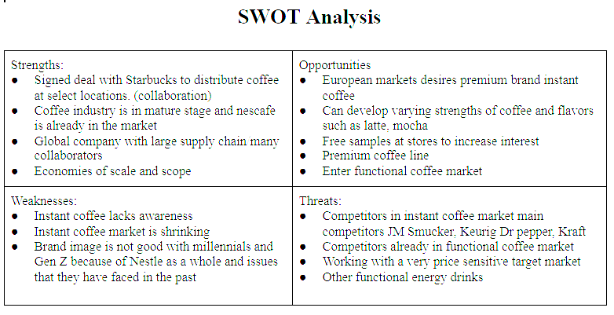
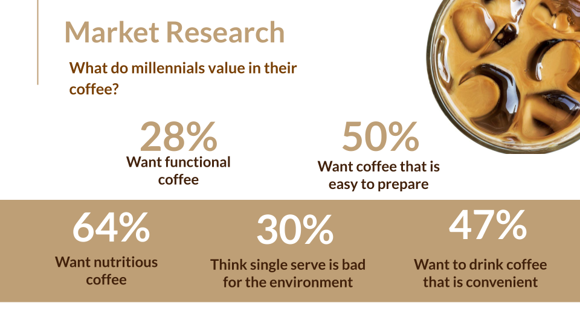
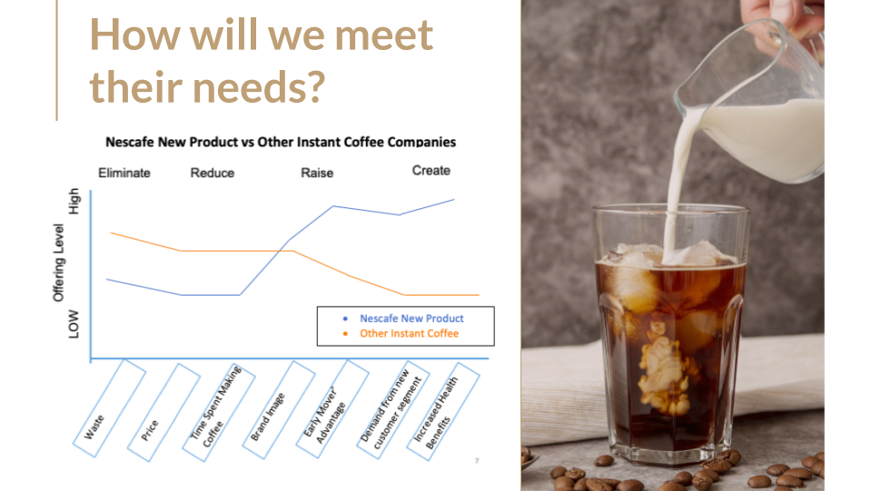
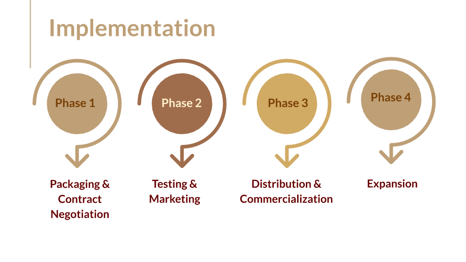
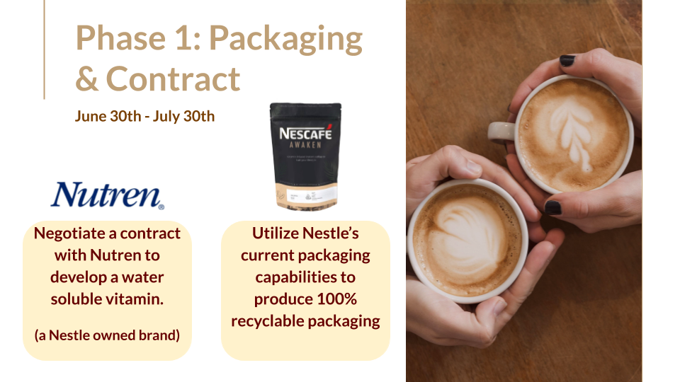
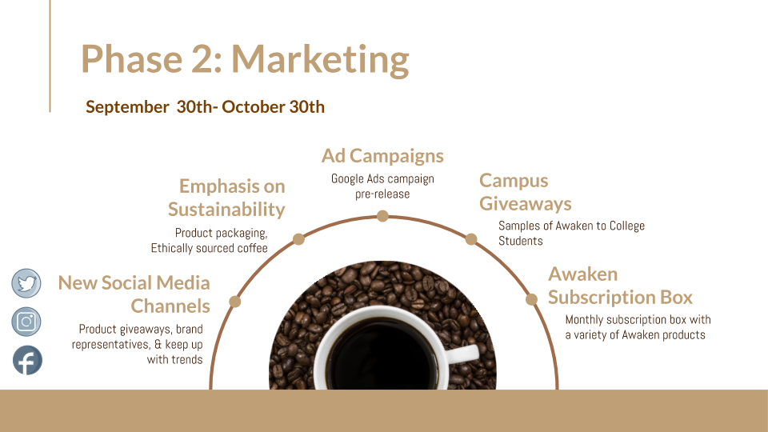
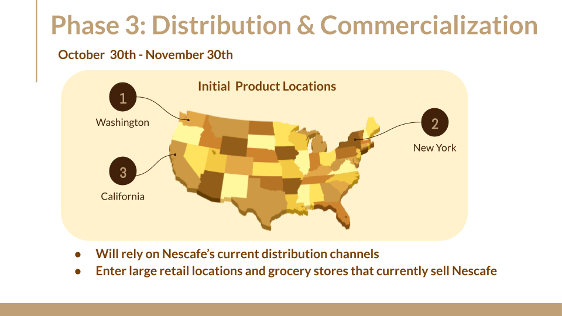
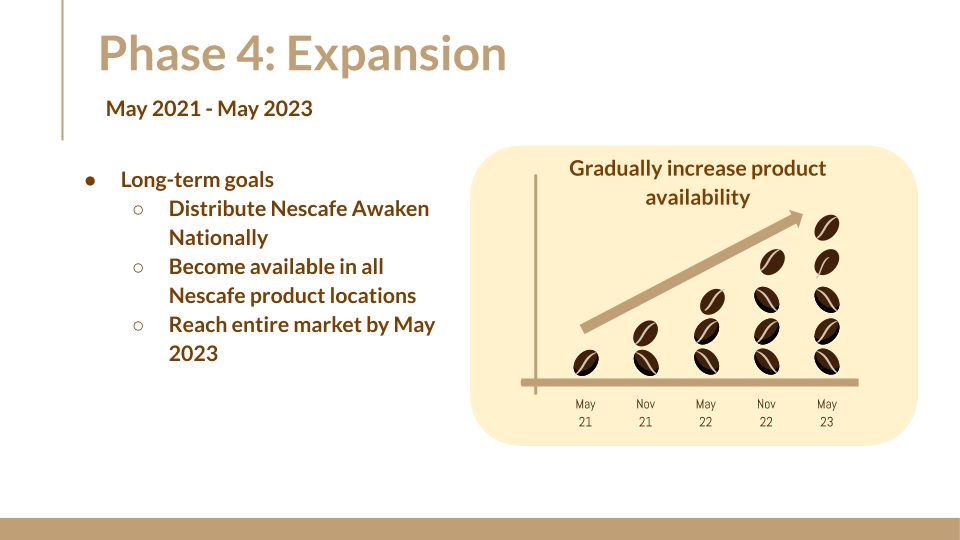

Madison Colvin
Business Capstone Project
Nescafé Case Competition
Project Overview
For my Business Capstone course I was placed in a group of four where we were tasked to create a comprehensive business plan to grow market interest in Nestlé’s instant coffee product: Nescafé. The project was to be completed in a variety of stages and required us to conduct thorough product and customer focused research. The assignment culminated in a case competition where we were to present our findings and recommendations in front of Foster School of Business staff and Nestlé employees. Our case presentation and recommendation took first place in the case study competition.
Intro and Strengths
The instant coffee market has proved to be a difficult market to succeed in over the past few years in the US. Market research shows that only 22% of coffee drinkers choose instant coffee, but there is still hope for the instant coffee market. It was found that 57% of coffee drinkers think that instant coffee has gotten better in the last few years, and we believe that Nescafe has the opportunity to make instant coffee more desirable than ever.
Dominating the current market with 36.6% share, Nescafe has proved to be the leader in the instant coffee market.
Although Folgers and Maxwell House combined account for 37.4% of the instant coffee market, both companies have been experiencing negative growth as of late.
This leaves Nescafe with a chance to capitalize on their growing market share by increasing their customer base and satisfying the needs of millenials. Millenials are some
of the hardest consumers to target, especially when it comes to coffee. With lower incomes than most other generations, they are price sensitive, yet very particular when
it comes to their coffee consumption.
Though it will be challenging, Nesafe has several key success factors that will support their efforts to target millenials. As a company that has been around for 150 years, Nestle has established global brand awareness and has a diversified portfolio that is fueled by their effective distribution channels and their advanced customer knowledge.

Within the instant coffee market, Nescafe can utilize the overarching support of Nestle and their skilled workforce
to look into ways to redefine their position within the millennial customer segment. Because Nescafe is present across the US, they have close proximity to virtually all key
areas that they will need to focus on. Additionally, Nescafe’s in-depth knowledge of their consumers will allow them to manipulate prices and packaging to target selective
and price sensitive millennials. From creating a root cause analysis, we have found that Nescafe’s inability to capture the millennial market boils down to
four main issues. We have done extensive research in order to find ways to introduce a product that improves Nescafe’s sustainability efforts, marketing techniques,
product packaging and ability to capture the millennial coffee drinker market in the US.

Market Research
In order to capture the market share of millennial coffee drinkers and get them interested in instant coffee, and Nescafe more specifically, it is important to understand what millennials are looking for in their coffee experience. From in-depth research, we found a wide range of information regarding millennials and their coffee preferences. Looking at millennials, it is clear that they are often busy or on the run. This comes through in the survey, where 47% of millennials said they choose their food and drink to buy based on convenience, and 50% choose based on it being easy to prepare. Along with being more busy than other generations, they are also one of the generations with the lowest income, with 66% saying that the food and drink that they buy must fit into their budget. As well as being busy and time sensitive, millennials are also very interested in environmental sustainability, with 30% of both generations stating that single serve pods are bad for the environment. This statistic threatens to take almost a third of the market away for using single serve coffee packaging, and further pushes companies to reach for more sustainable options. Not only do millennials focus on environmental sustainability, they are also focusing on the social responsibility of companies more than ever. Looking at the actual taste and benefits of coffee, we found that 64% of millennials want a nutritious coffee . Looking further into this idea, functional coffee (coffee with vitamins/supplements) is highly desired by millennial consumers, chosen by 28%.

To supplement this research, we also interviewed and surveyed approximately 50 millennials to learn more about their coffee habits and preferences.
Product Run Down
Because millennials are increasingly health conscious, we have created a product that emphasizes the ease of instant coffee while also focusing on the health of our consumers which will allow Nescafe to reposition themselves as a premium instant coffee brand. It is with these objectives in mind that we have come up with a functional coffee and named it Nescafe - Awaken. Functional coffee is a coffee that incorporates some form of a health benefit, whether it be vitamins, antioxidants, probiotics, or other supplements. Nescafe Awaken takes Nescafe’s current Nescafe Clasico Dark Roast Instant Coffee and incorporates antioxidants, B Vitamin Complex, and probiotics in order to provide consumers with a drink that improves health while still providing a quick and easy way to make coffee everyday. With a modern design and 100% recyclable packaging, we are tailoring the product to look more attractive to millennials while also highlighting the new features of the coffee. Including recyclable packaging is a feature that we believe will help gain a sustainable reputation, and we plan to look at other Nestle brands that use recyclable material for guidance. Currently, Poland Springs Water and Yes! Snackbars use 100% recyclable material, so we plan to consult with them as well as Nestle as a whole in order to find the appropriate materials needed. Our coffee will be sold in 10.5 ounce bags, which is the same weight as current Nescafe instant coffee containers. Allowing consumers to choose how much coffee they want to add to water will give them the freedom to choose a customized strength in each cup.

The image above displays the Blue Ocean Strategy we used when creating Nescafe Awaken. Looking at competitors that are currently
in the market, there are only a few small companies that sell functional coffee. The four that we looked into are Bulletproof coffee, aimed to target customers on
the Keto Diet, Laird Superfood, which includes different vegan additives to make coffee more nutritional, Four Sigmatic, which includes ground mushrooms in their
coffee, and VitaCup, which includes nutritious ingredients within their single serve and bagged instant coffee. While all of these companies have been successful,
we believe that Nescafe has the resources and infrastructure available to enter into the market and quickly gain market share over the less well known brands.
After looking through product reviews, it is clear that there is an opportunity to add health focused ingredients in instant coffee while still maintaining the
true coffee flavor. From a pricing perspective, all four of the companies that we analyzed sell their products between $1.25-$1.60 per ounce. From our research,
we found that Nescafe is currently selling their instant coffee at a price of $1.37 per ounce. In order to stay competitive and appeal to the millennial market,
we think that $1.50 is an appropriate price to charge per ounce for Nescafe Awaken. For our 10.5 ounce bags, we will be charging $15.75, which is lower than
most of what the competition would sell that size bag for. We believe that this is a fair price, and although it is more expensive than other Nescafe products,
we plan to emphasize that it is also eliminating the needs to buy specific vitamins in our marketing strategy.
Implementation and Resources
In order to implement Nescafe Awaken, we plan to utilize Nestle’s global scale, distribution channels and widespread availability of resources and capabilities. We have come up with a customized plan that includes different phases, ending with full availability of Nescafe Awaken across the US.
Phase 1 will consist of outsourcing, Phase 2 will consist of testing and marketing, Phase 3 will be focused on distribution & commercialization, and Phase 4, our final phase, will be focused on expansion. We envision our time to market for Nescafe Awaken to be approximately 4 months, with Phase 1 beginning on June 30th and taking 1 month to complete. During Phase 1, Nescafe will need to negotiate a contract with Nutren (a Nestle owned brand) to develop a water soluble vitamin complex consisting of antioxidants, probiotics and B vitamins that will be combined with “Nescafe Clasico” Dark Roast Instant Coffee to create “Nescafe Awaken”. Phase 1 will also include utilizing Nestle’s current packaging capabilities to produce 100% recyclable packaging.
Phase 2 will involve concept testing with focus groups (2 weeks), producing a prototype of Nescafe Awaken (2 months), additional focus groups to test our prototype (2 weeks). Along with testing our prototype, Phase 2 will be heavily focused on marketing efforts, including implementation of new social media channels for the new product line, focused advertising campaigns 1 month before the Nescafe launch date, and a new emphasis on product sustainability. After the product's initial release, Nescafe should further their marketing efforts and introduce a monthly Awaken subscription box for their loyal customers and implement Awaken coffee giveaways on college campuses across the US to introduce young consumers to instant coffee. These marketing efforts are designed to tackle Nescafe’s current issues with the millennial market and boost brand engagement, introduce millennials to instant coffee, and establish brand trust.
Phase 3 will heavily rely on Nestle’s current distribution channels. We plan to introduce Nescafe Awaken in New York, California and Washington by November 30th by utilizing Nestle’s current distribution channels and placing Nescafe Awaken in big retailers/grocers who already sell Nescafe products.
Phase 4, our final phase and long-term goal is to distribute Nescafe Awaken nationally to all big retailers who currently sell Nescafe products. We will begin Phase 4 approximately 6 months following our Nescafe Awaken product launch and hope to have fully expanded nationally 2 years after the product launch date.
The three biggest risks we have identified are eroding current Nescafe product sales, competition from smaller functional coffee brands, and a slightly higher price than Nescafe’s current product offering. In order to mitigate the risk of eroding current product sales, our marketing strategy will position Nescafe Awaken as a health conscious premium instant coffee, which won’t have too much overlap into the current customer base of low price instant coffee. Although there are currently small coffee brands in the functional coffee market, the global presence and scale of Nestle’s operations will give Nescafe an advantage over these smaller functional coffee brands. The last significant risk Nescafe will face is having a higher price than current Nescafe products. However, through our marketing plan we will be able to promote Nescafe Awaken as a premium instant coffee and justify our higher price point by highlighting our health benefits.
Financial Analysis
For revenues of existing Nescafe instant products, we looked at the overall coffee industry and saw that instant coffee captures 6% of the $14.218 billion industry. From the instant coffee portion of the industry, we took the 36.6% that Nescafe currently captures to arrive at a total revenue of $312.24 million for 2019. From guidance, we found that the coffee industry is estimated to be valued at $18.5 billion by 2024, so we took that number and multiplied it by 4% in anticipation of a shrinking instant coffee industry, then again by 36.6% to reflect Nescafe’s market share within the industry. This brought us to a revenue of existing products of $270.84 million in 2024. To show our predictions of a shrinking instant coffee market, we reduced revenues by 0.4% each year for existing products. For the introduction of Nescafe Awaken, we took the value of the whole coffee market, multiplied it by the portion of the market that represents instant coffee, and then predicted that Awaken will account for 5% of that market in the first year. We forecasted revenues to increase by 10% in 2021 and 2022, 12% in 2023, and 11% in 2024. We followed guidance stating that the coffee industry is currently holding a 51% profit margin, using that value for 2019, and slightly decreased those numbers to reflect the more expensive inputs into Awaken that will increase the cost of goods sold for Nescafe. After looking into industry averages for marketing, we decided to make marketing expenses 7.5% of revenues in 2019, 2022, 2023, and 2024. We increased marketing expenses to 10% of total revenues in 2020 and 2021 to reflect increased marketing efforts for the new product rollout. Lastly, for R&D expenses we also looked into industry averages and found that companies spend around 15% of revenues on R&D annually. We used this percentage in 2019, and increased it to 25% in 2020 to reflect the production of Awaken, and decreased it to 18% in 2021, then back to 15% in 2022, 2023, and 2024. The first image listed below reflects how Nescafe’s financials would look without the introduction of Nescafe Awaken. While revenues are higher in 2020-2021 due to lower R&D and advertising costs, revenue by 2024 is $17.27 million lower without the introduction of Nescafe Awaken.
Conclusion
After extensive research and analysis, we have come to the conclusion that Nescafe Awaken is the best option given Nescafe’s current shortcomings. Focusing on health benefits, sustainable packaging, and increased marketing efforts, we believe that millennials will be drawn to our product and the benefits that it provides. Other options that we considered have the possibility to improve Nescafe’s performance in the instant coffee market, though they are not as effective as Nescafe Awaken. First, we looked into the idea of creating a ready to drink coffee line, using instant coffee in the formula. This would give millennials a quick and easy way to drink coffee on the go, although we believe that the competition in that market would be too high to sustain a solid market share. We also thought about the idea of simply improving the way that Nescafe market’s their products. Their current attempts at reaching the millennial market are not focusing on the right marketing channels, and we think that if Nescafe focused more on social media and influencers, they would be able to reach the millennial market more efficiently. Although this is a viable option, we do not think that the increase in customers would be drastic enough to reach Nescafe’s expectations. We created an alternatives matrix which shows that although these options are a possibility, Nescafe Awaken presents the highest opportunity for growth.
Alternatives Matrix